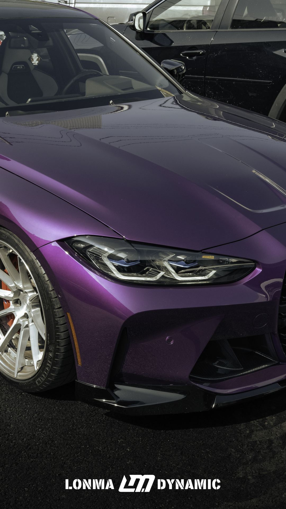

← BACK TO CASES
CASE 03
LOW STANCE
PROPORTION, RIDE HEIGHT, AND WHEEL FITMENT
Ride height, wheel fitment, and body clearance create a low, cohesive side profile.

A low stance still has to work. Every change to ride height or fitment is checked for steering clearance, road usability, and visual balance.